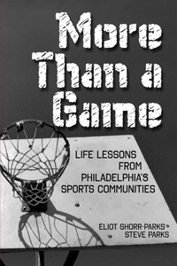

<body bgcolor="#FFFFFF" text="#000000" link="#0000FF" vlink="#CC0000" alink="#CC0000"><center><hr width="350" size="1" align="center" noshade>Voices from Philadelphia's athletic community on what it's like being a Philadelphian and a fan, and on what makes a community work<hr width="350" size="1" align="center" noshade><p><a href="https://cdcshoppingcart.uchicago.edu/Cart/ChicagoBook.aspx?ISBN=9780984042906&&PRESS=temple" target="_top">Buy this book!</a> | <a href="https://cdcshoppingcart.uchicago.edu/Cart/Cart.aspx?PRESS=temple" target="_top">View Cart</a> | <a href="https://cdcshoppingcart.uchicago.edu/Cart/Cart.aspx?PRESS=temple" target="_top">Check Out</a></p><p></p></center><!--none//--><h1>More Than a Game</h1>
<H2>Life Lessons from Philadelphia's Sports Community</H2>
<h3>Eliot Shorr-Parks and Steve Parks</h3>
<P>paper 0-9840429-0-3 $22.95, Jan 12, <FONT COLOR=#990033>Available</FONT>
<BR> 266 pp
6x9
</P><P>Anyone who has sat at the "Vet," watched a pick-up game, or played catch in the yard, knows that sports is more than a game in Philadelphia&#8212;it's a commitment to hard work, a belief in community values, and a tradition of never giving up.
<P>Told through the personal experiences of professional athletes, community leaders, and everyday players, <i>More Than a Game</i> captures how sports build character and communities with each hit of the ball, catch of a touchdown pass, or dunk of the basketball.
<P>Among those featured are Carlos Ruiz, Chris Pronger, Sonny Hill, Angelo Cataldi, Leonard Weaver, Tina Sloan Green, Ruben Amaro, Jr., Joe Banner, Alyson Goodner, Gary Cobb, Jim Ellis, Mayor Michael Nutter, Nicholas Bradley, Governor Edward Rendell, and Rami Ibrahim.
<P>The perfect gift for the aspiring athlete, the community coach, or the supportive parent.
<p>Distributed by Temple University Press for the New City Community Press
<BR>&nbsp;<H2>About the Author(s)</H2>
<P><b>Eliot Shorr-Parks</b>, a graduate of Temple University, is Associate Editor of New City Community Press. <i>More Than a Game</i> is his first book. He is currently working on a project focused on Philadelphia football. You can read his coverage of Eagles football on <a href="http://www.buzzonbroad.com/" target="new">BuzzonBroad.com</a>. He is a life-long Philadelphia resident.</P>
<P><b>Steve Parks</b> is an Associate Professor of Writing at Syracuse University and founder of New City Community Press (<a href="http://newcitycommunitypress.com/" target="new">newcitycommunitypress.com</a>). His previous books include <i>Gravyland: Writing Beyond the Curriculum in the City of Brotherly Love</i> and <i>Class Politics: The Movement for a Students' Right To Their Own Language</i>. He lives in Philadelphia with his family.</P>
<BR><H2>Subject Categories</H2>
<p><A HREF="/tempress/philly.html" TARGET="_top">Philadelphia Region</a>
<BR><A HREF="/tempress/sports.html" TARGET="_top">Sports</a>
<BR><A HREF="/tempress/urban.html" TARGET="_top">Urban Studies</a>
</p>
<p align="center"><a href="https://cdcshoppingcart.uchicago.edu/Cart/ChicagoBook.aspx?ISBN=9780984042906&&PRESS=temple" target="_top">Buy this book!</a> | <a href="https://cdcshoppingcart.uchicago.edu/Cart/Cart.aspx?PRESS=temple" target="_top">View Cart</a> | <a href="https://cdcshoppingcart.uchicago.edu/Cart/Cart.aspx?PRESS=temple" target="_top">Check Out</a></p><p><font face="Arial" size="1"><a href="copyright.html" onMouseOver="window.status='Web Copyright Policy';return true;" onMouseOut="window.status=''" title="Web Copyright Policy">&copy;</a> 2015 <a href="http://www.temple.edu" target="new" onMouseOver="window.status='Link to Temple University home page';return true;" onMouseOut="window.status=''" title="Link to Temple University home page">Temple University</a>. All Rights Reserved. http://www.temple.edu/tempress/titles/2233_reg.html</font></p>